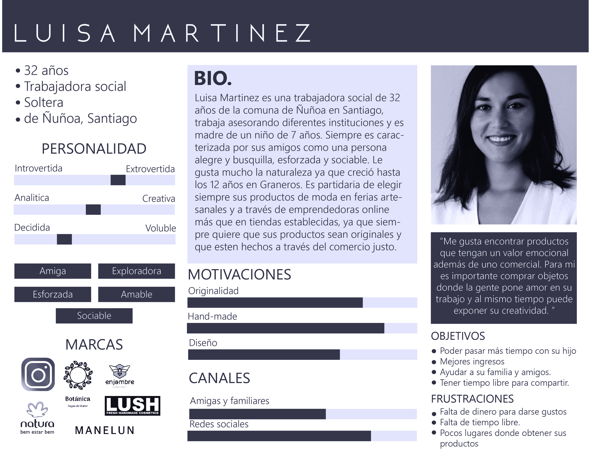
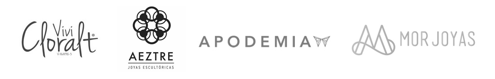

- 1.- Entrevista con el cliente y usuarios
- 2.- Investigación sobre el mercado actual
- 3.- Síntesis de la información recaudada
- 4.- Aprendizajes encontrados
- 5.- Ideación
- 6.- Prototipado
Botánica Joyas
E-commerce para emprendimiento en joyería
Estudio de caso
El desafío
Potenciar un emprendimiento que se encuentra en etapa prematura y lograr transicionarlo digitarmente desde las redes sociales a un e-commerce, donde así pueda encontrar nuevas oportunidades económicas y captar a públicos más diversos y extensos
Mi rol
Formé parte del equipo de ejecución del proyecto, involucrándome en las etapas de investigación, síntesis de información, ideación y prototipado
Herramientas utilizadas
Principales tareas realizadas
Marco general del proyecto
Botánica joyas es un emprendimiento que reúne lo mejor de la artesanía en diferentes metales con la flora y fauna chilena como inspiración principal para sus productos. Todo esta construido de manera artesanal y en metales como plata, cobre, bronce y alpaca, lo que los hace productos de máxima calidad y exclusividad.
Es por eso que para potenciar el crecimiento de este emprendimiento se decidió realizar un estudio de usuario para traspasar la plataforma desde las redes sociales (lo que está utilizando la emprendedora actualmente) a un sitio web e-commerce que permita agilizar el proceso de compra para los usuarios y también facilitiar el trabajo de la emprendedora.
¿Cómo podemos mejorar la experiencia de los clientes al momento de querer adquirir una joya de este emprendimiento?
Definiendo y entendiendo al usuario
A partir de entrevistas realizadas a diversas clientas de la tienda y al mismo tiempo de posibles futuras clientas hemos podido recopilar sus perfiles en una persona figurativa que se representaría de la siguiente manera:

Principales aprendizajes extraídos del estudio de usuario
- 1.- Les llama mucho la atención a las usuarias la propuesta de valor ligada a la flora y fauna autóctona chilena.
- 2.- Los pocos lugares de venta de joyas de este tipo son online. De lo contrario estos productos solo se adquieren en ferias artesanales.
- 3.- La información expuesta en redes sociales no satisface sus necesidades, por ende no se motivan a comprar.
- 4.- A las usuarias les parece atractivo el hecho de que exponga sus trabajos ya que les da indicios de lo que es capaz de hacer y posibilidades de personalización.
Estudio del mercado actual
Junto con el estudio de usuario se realizó también un Benchmark que nos ayudó a comprender mejor como funcionaban otros emprendimientos detro del marco de la joyería y al mismo tiempo darnos cuenta como ellos solucinaban problemas que Botánica joyas estaba enfrentando.

- 1.- Poseen más de una red para vender sus productos todos los emprendimientos evaluados.
- 2.- Son muy consistentes con la información que colocan sobre sus productos para que el usuario la pueda tener a su alcance.
- 3.- La gran mayoría muestra catálogo de sus productos.
- 4.- Casi todas han establecido un sistema de pago y envío de productos.
Ideación y prototipado

Moodboard inspirativo
Se han tomado referencias estéticas de diversas fuentes en donde se ha podido crear un marco estético y de diseño visual que sirva de referencia para el prototipado.
Flujo de uso
Puedes ver aquí el Flujo de uso o User flow realizado recreando una compra en el sitio.
Concepto final
Moodboard inspirativo
Se han tomado referencias estéticas de diversas fuentes en donde se ha podido crear un marco estético y de diseño visual que sirva de referencia para el prototipado.